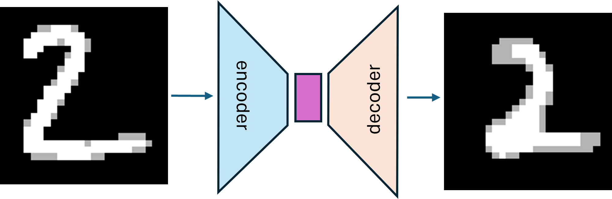
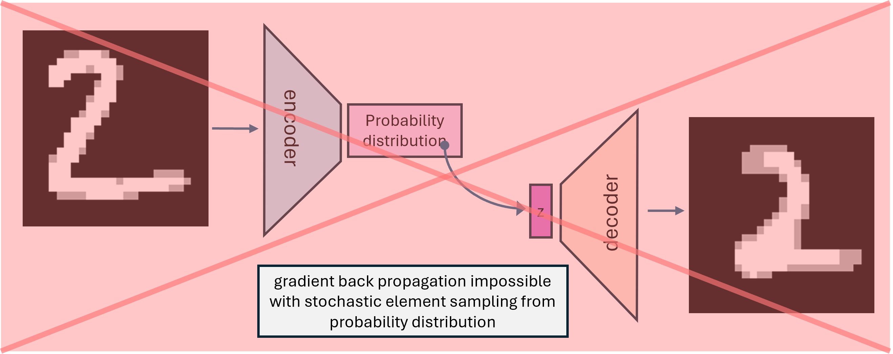
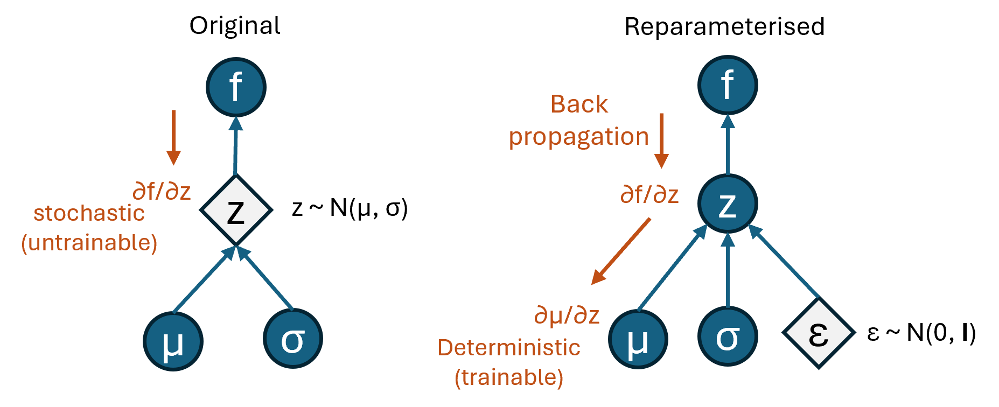
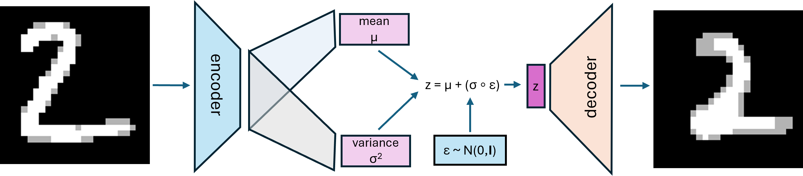
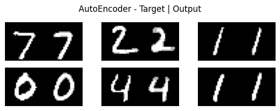
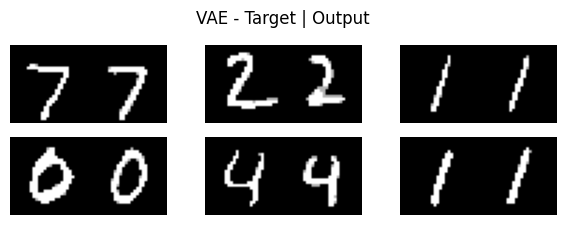
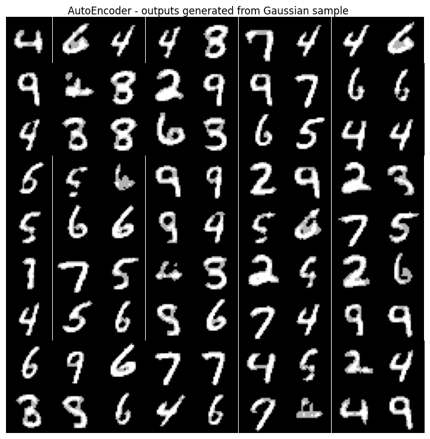
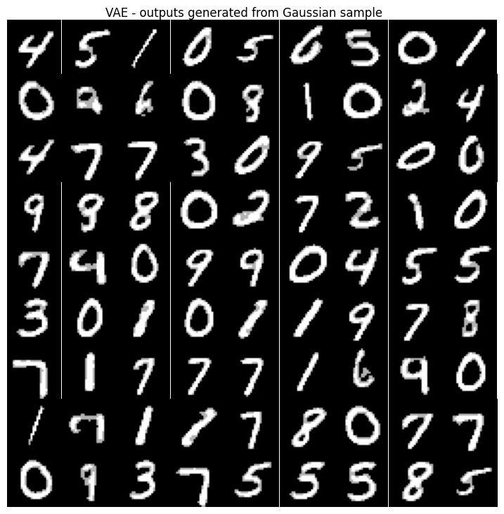
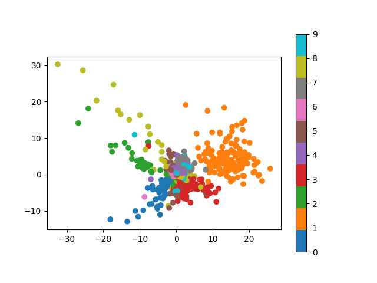
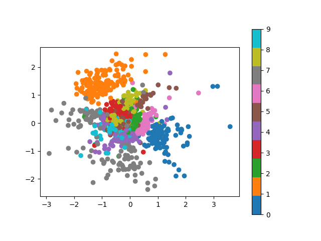

AutoEncoders vs Variational AutoEncoders
Here is my code for any models and images used in this post.
What is an AutoEncoder?
AutoEncoders are a clever way to learn a latent representation of whatever object you have. It’s a model that is trained to output it’s input. This sounds strange but the trick is the model has an information bottleneck by reducing the dimensionality in the middle of the model. This means if the model is able to output a very good representation of the input with the bottleneck, it has learnt a reduced dimensionality representation of the input. The hope is the model has learnt the key features defining the input and it’s discarded less useful information.
Lets see a simple example using the MNIST handwritten digit dataset.

Now you can see there are 2 parts to the model. The encoder, which takes the input and reduces the dimensionality down to the latent space (the purple part). And the decoder, which takes the latent space and projects it back to the output dimensionality, and ideally looks similar to the input. There is no restriction on what architecture the encoder and decoder are (CNN, fully connected, RNN, etc.), what defines an autoencoder is an informational bottleneck and it’s output target is the input.
The only loss required for an AutoEncoder is a reconstruction loss, ie. one that is minimising a metric distance between the input and the output. For simplicity in this project I’ll be using the BinaryCrossEntropy
What’s the purpose of an AutoEncoder?
There are a few benefits of an AutoEncoder:
Unsupervised Learning In the previous section we never mentioned about the dataset having labels. So this is a way to learn from unlabelled datasets, and then you could transfer learnings from the encoder to another model, eg. image recognition.
Dimensionality Reduction Having a latent space that has hopefully learnt the key information of an object (eg. handwritten digit images) can be incredibly useful. These representations can then be used in other processes. For example Facebook did something similar when creating a speech representation called wav2vec 2.0 which was learnt solely from unlabelled speech audio to learn a latent space. Then the Wav2Vec 2.0 latent space was in a model for Automatic Speech Recognition.
Generating New Outputs Once a latent space is learnt, you can then take a point from the latent space and feed it into the decoder to generate a new unseen object. However there are issues doing this, the latent space is not structured, and therefore there is no gaurentee the generated image has any meaning when decoded. That’s where the Variational AutoEncoder comes in
What is a Variational AutoEncoder
The benefit of a Variational AutoEncoder is to place restrictions on the latent space to actually define a probability distribution.

So if we do this directly so that the encoder maps to a probability distributiion and then we sample from that distribution, we are unable to train the model like this because the back propogation has a stochastic element. Instead we do the reparameterization trick. To do this the stochastic element is removed from the encoder, instead the encoder maps to parameters of the probability distribution, and we sample the stochastic element from an static distribution, \(\epsilon \sim \mathcal{N}(0, I)\). Therefore we define the latent variable as:
\[ z = \mu + \sigma \odot \epsilon \]
The benefit of this is there is no stochastic back propogation anymore. This becomes clear when we look at the computational graph and show the backpropogation. By sampling from a static probability distribution that isn’t learnt, the gradient backpropogation can extend through the encoders deterministically.

So now if we put all this together we can look at the model architecture.

We are deciding to learn a latent Gaussian distribution space, ie. the encoder outputs are the mean and variance of a Gaussian distribution, which in turn defines how we do the reparameterisation trick. You can choose any distribution but the loss and reparameterisation trick will have to be adjusted.
What Loss is used with a Variational AutoEncoder?
For a more technical derivation of the VAE and it’s loss see the brilliant Lil’Log blog post on VAEs. For a high level overview we want the learnt probability space parameters the encoder is mapping to, to be the standard Gaussian distribution. To enforce this we use the Kullback–Leibler divergence (KL) to minimise the distance between the true posterior \(p_{\theta}(z|x)\) and the estimated (and assumed to be gaussian) distribution \(q_{\phi}(z|x)\).
After a bit of expansion and moving terms of \(D_{KL}(q_{\phi}(z|x)||p_{\theta}(z|x))\) we find:
\[ log(p(x_i)) \geq - D_{KL}(q_{\phi}(z|x_i)||p(z)) + E_{\sim q_{\phi}(z|x_i)} \left[ log(p_{\theta}(x_i|z)) \right] \]
Where \(x_i\) is a single data point (hand drawn digit). The right handside of the equation is known as the Evidence Lower Bound (ELBO) because maximising it maximises the log-liklihood of of our data. The first \(D_{KL}\) is known as the regularizer because it is a constraint on the distribution we are learning \(q_{\phi}\). The second term is known as the reconstruction term because it is a measure on the liklihood of the reconstructed data output. It’s reconstructed because the \(p_{\theta}\) probability is conditioned on \(z\).
However we have not explicitly chosen any restrictions on what distributions we are using. As mentioned you can restrict \(q\) to be of any type of distribution, but if we choose a multivariate Gaussian with a diagonal covariance then we can create a closed form loss function \(L\). An easy to follow derivation of this can be found in Odaibo’s derivation, and we get the following loss:
\[ L = - \sum_{j=1}^D \frac{1}{2} [ 1 + log(\sigma_j^2) - \mu_j^2] - \sum_{i=1}^N (||x_i - \hat{x_i}||^2_2) \]
where \(N\) is the total number datapoints in your dataset, \(D\) is the dimension of your latent space \(z\), and $ is an output from our model from a single sampled \(q_{\phi}(z|x_i)\). During training you can sample multiple \(z_i\) to generate multiple \(\hat{x_i}\) but with a large enough dataset sampling once is fine to get a good enough estimation of \(q_{\phi}(z|x)\).
AutoEncoder vs Variational AutoEncoder
Now we can train up some models and compare the results. Here is code I wrote to train a AutoEncoder and a VAE using the MNIST digit character set. Both models use a fully connected neural net for the encoder and decoder and have a two dimensional latent space. They are the same except the VAE encoder outputs a two dimensional mean \(\mu\) and two dimensional \(\sigma^2\) (for the diagonal covariance), which used to sample a two dimensional \(z\) as input to the decoder.
Performance as AutoEncoders
First, lets have a look at how well both models perform as AutoEncoders. Given an input how close is the output generated from each model? Using the validation set each model achieves a picel-wise accuracy of about 92% after 30 epochs. Visually both models clearly perform well.
|  |  |
Generating Digits
Now for the more interesting parts. First we try generating digits using both models. To do this we sample \(z\) from a standard 2D Guassian distribution, and then feed \(z\) into the model’s decoder to generate an output. We repeat this 81 times to get a 9x9 grid of generated digits from each model.
| AutoEncoder | VAE |
|---|---|
|  |  |
It worked! We are generating hand-written digits. I think that’s pretty cool. Both models seem pretty good, but looking closer I would say the VAE model is a bit better, it’s definietly not perfect but there are less ‘bad’ generated digits.
If we look at the latent space of each model a bit more we should be able to get a view why this is.
Latent Space Distribution
This is the crux of the whole reason we are comparing AutoEncoders to VAEs - the latent space should be more structured compared to the AutoEncoder. The VAE loss ensures this, whereas the AutoEncoder loss only cares about the generated image (from the training set).
Below we are mapping the encoded \(z\) 2D values of input digit images for each model, I’ve also added a colour labelling for each point.
| AutoEncoder | VAE |
|---|---|
|  |  |
Now we can clearly see the difference. A few points to highlight: - VAE latent distribution is much more like a standard 2d Gaussian distribution (scale, symmetry, density) compared to the AutoEncoder - Using the AutoEncoder to generate images using the standard Gaussian, there is a very low chance of generaing the digit ‘1’. Whereas the VAE has all digits relatively close to [0,0] so there is a decent chance of generating all digits (this can be seen in the ‘Generating Digits’ image)
# Thoughts Going through the first principles to create and train a VAE model and compare it to a vanilla AutoEncoer has really illuminated a few things:
VAE enforces restrictions on the latent space using the ELBO in the loss derivation.
Any distribution can be used to enforce on the latent distribution, but there is a closed form for the loss using a Gaussian with a diagonal covarience.
AutoEncoders can be used to generate images but you have to be much more careful how you’re sampling you latent space \(z\). Probably the best way is to perturb a known latent point \(z\) you want to mimic.
Further things I would love to explore on this topic would be:
Conditional Variational AutoEncoders - To give more control on generating outputs from the model you can give the class you want to generate as an input feature. Otherwise, to generate a specific digit with the VAE model I’ve trained, I’d have to find the latent space point of the class I want to generate and perturb that point before inputting it into the decoder. But this doesn’t gaurantee to generate a digit of the same class.
Using a non-Gaussian distribution in the ELBO derivation for the VAE loss - would using a more complex distribution improve the performance of generating outputs?
Style Encoding - it would be great to be able to input a reference image (of the same or different class you want to generate) and then generate outputs with a similar style. I’ve seen it here for text-to-speech, but I think it could be applied to this with little change.